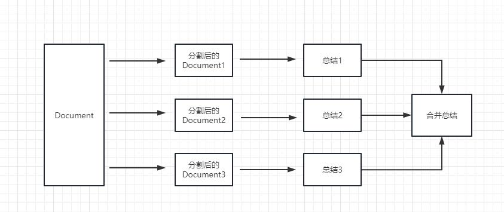
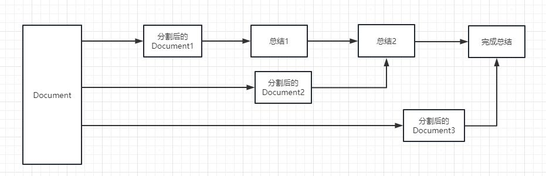

用GPT搭建问答系统
一直没有想清楚怎么使用GPT搭建问答系统，我大概知道要做docs和query embedding, 但是不知道匹配到了文档之后，怎么把文档解释出来。
之前同事推荐看看这个项目来着 liaokongVFX/LangChain-Chinese-Getting-Started-Guide: LangChain 的中文入门教程, 一直没有时间看，里面很多细节也想不明白。
今天在看这个视频 GPT-4 - How does it work, and how do I build apps with it? - CS50 Tech Talk - YouTube 里面也提到了问答系统，所以就顺便找找了资源。
想灌入文档，第一个想法就是做fine-tunning. 但是这条路不好走，而且很可能是错误的路。 OpenAI Q&A: Finetuning GPT-3 vs Semantic Search - which to use, when, and why? - YouTube. fune-tunning几乎是需要训练一个全新任务，而问答系统本质上和GPT任务是一样的，所以其实没有必要做fine-tunning. embedding search才是正确的方法。
我理解doc可以拆分成为很多小段(paragraph), 然后每个P单独做embedding存放在vectordb下面，然后query也去做embedding，找个比较相似的paragraphs. 问题是这些小段怎么拼接起来呢？毕竟每个小段只是文档的单独片段（甚至如果简单拆分的话，可能并不是完整的句子）。后面看了这个视频 Answer complex questions from an arbitrarily large set of documents with vector search and GPT-3 - YouTube 大致搞清楚了怎么做。
我们在得到许多小段之后，可以重新拼接成为一个prompt来问chatgpt，比如下面这样的格式
Use the following pieces of context to answer the question at the end. If you don't know the answer, just say that you don't know, don't try to make up an answer. <<PARAGRAPHS>> Question: <<QUERY>> Helpful Answer:
其实这个在上面github也讲到了
chain 的 chain_type 参数
这个参数主要控制了将 document 传递给 llm 模型的方式，一共有 4 种方式：
stuff: 这种最简单粗暴，会把所有的 document 一次全部传给 llm 模型进行总结。如果document很多的话，势必会报超出最大 token 限制的错，所以总结文本的时候一般不会选中这个。
map_reduce: 这个方式会先将每个 document 进行总结，最后将所有 document 总结出的结果再进行一次总结。

refine: 这种方式会先总结第一个 document，然后在将第一个 document 总结出的内容和第二个 document 一起发给 llm 模型在进行总结，以此类推。这种方式的好处就是在总结后一个 document 的时候，会带着前一个的 document 进行总结，给需要总结的 document 添加了上下文，增加了总结内容的连贯性。

map_rerank: 这种一般不会用在总结的 chain 上，而是会用在问答的 chain 上，他其实是一种搜索答案的匹配方式。首先你要给出一个问题，他会根据问题给每个 document 计算一个这个 document 能回答这个问题的概率分数，然后找到分数最高的那个 document ，在通过把这个 document 转化为问题的 prompt 的一部分（问题+document）发送给 llm 模型，最后 llm 模型返回具体答案。
我也照着github那个参考教程写了一个，就是勉强能跑起来，但是效果不好。我选择的语料是starrocks/docs下面的md文件，同时购买gpt plus得到的效果是还可以的。
#!/usr/bin/env python # coding: utf-8 from langchain.embeddings.openai import OpenAIEmbeddings from langchain.vectorstores import Chroma from langchain.text_splitter import CharacterTextSplitter from langchain import OpenAI,VectorDBQA from langchain.document_loaders import DirectoryLoader from langchain.chains import RetrievalQA from langchain.chains.question_answering import load_qa_chain # 加载文件夹中的所有txt类型的文件 loader = DirectoryLoader('docs', glob='*.md') # 将数据转成 document 对象，每个文件会作为一个 document documents = loader.load() # 初始化加载器 text_splitter = CharacterTextSplitter(chunk_size=100, chunk_overlap=0) # 切割加载的 document split_docs = text_splitter.split_documents(documents) # 初始化 openai 的 embeddings 对象 embeddings = OpenAIEmbeddings()train = False if train: # 将 document 通过 openai 的 embeddings 对象计算 embedding 向量信息并临时存入 Chroma 向量数据库，用于后续匹配查询 docsearch = Chroma.from_documents(split_docs, embeddings, persist_directory="vector_store") docsearch.persist() else: docsearch = Chroma(persist_directory="vector_store", embedding_function=embeddings) def ask(query): # 创建问答对象 qa = VectorDBQA.from_chain_type(llm=OpenAI(), chain_type="stuff", vectorstore=docsearch, verbose = False) # return_source_documents=True) # 进行问答 result = qa({"query": query}) print('===== query =====') print(result['query']) print('====== result =====') print(result['result']) ask("can you give me an sql example of creating primary key table and insert into sql stmt") ask("how to stop all routine loads for a database") ask("how many joins are supported by starrocks and explain them") ask("primary key模型和duplicate key模型有什么差别？") ask("什么时候应该使用主键模型?")